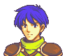

Support Rank C

ウェンディさん
なにをしているのですか？Ms. Gwendolyn, what are you doing?

訓練よTraining.
歩法のねIn footwork.
歩き方ですか？
どうして 改めて・・・How to walk? Why go back to basics...
重騎士は 一度倒れたら
起き上がるのは難しいわOnce a heavy cavalier falls, it's hard to get back up.
どんな戦いでも ゆるがない
足腰をつくる必要があるのI need to build legs and hips that won't waver, no matter the battle.
そうでしたか・・・I see...
なにごとも基本が大切よThe basics matter in everything.
Support Rank B
ふんっ！ ふんっ！Hnh! Hnh!
あ オージェ
剣の素振り？Ah, Ogier, practicing your sword swings?
ええYeah.
おれも ウェンディさんに
負けていられませんからI can't let myself fall behind you, Ms. Gwendolyn.
基本から 固めなおそうと
思いましてI figured I'd go back and firm up the basics.
そう・・・I see...
だけれど
私も負けないわよBut I won't lose either.
どちらが 強くなれるか
競争ですねSo it's a race, to see who gets stronger.
Support Rank A
ウェンディさん
どうですか 調子は？Ms. Gwendolyn, how are you doing? Feeling alright?
もちろんいいわよOf course I'm fine.
一人前の重騎士になるまで
調子が悪いなんて言っていられないわI can't go around saying I'm not feeling well until I become a proper heavy cavalier.
おれもですよ
傭兵として一人前になるまでは・・・Same for me, as a mercenary — not until I'm the real deal...
・・・オージェ ありがとう...Ogier, thank you.
えっ ど どうしたんですか！
急に・・・Huh? Wh-what's wrong? All of a sudden...
あなたと競い合っているから
わたしは くじけずに努力していられるのIt's because I'm competing with you that I can keep pushing myself without giving up.
そうでなければ
あきらめていたかもしれないわIf it weren't for that, I might have given up.
「やはり 女のわたしには無理だ」ってTold myself, "after all, I can't do this, being a woman."
・・・それを言うなら おれだって...if you're going to say that, so would I.
ウェンディさんがいたから
ここまで がんばれるんですIt's because you were there, Ms. Gwendolyn, that I've been able to make it this far.
おたがい様ですよWe're even, then.
そうね フフフ・・・
これからも負けないわよThat's right, heh heh... I won't lose from here on either.
おれだって！Me neither!